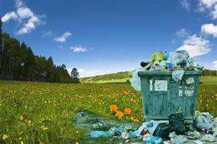
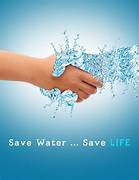
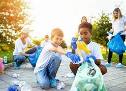
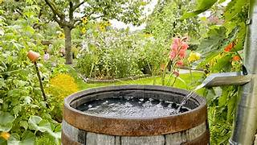
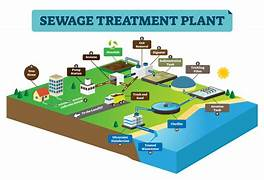
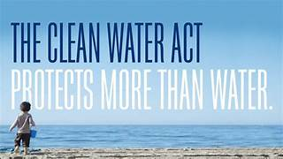

Water is life's most precious resource. Let's cherish it, respect it, and use it wisely. Every drop saved today ensures a sustainable future for generations to come.
What really is Water Pollution?
Water pollution occurs when harmful substances, such as chemicals or microorganisms, contaminate bodies of water, including rivers, lakes, oceans, and groundwater. This pollution can result from various human activities, such as industrial discharges, agricultural runoff, and improper waste disposal. These pollutants can include heavy metals, pesticides, fertilizers, sewage, and plastics, among others. Water pollution poses serious threats to both aquatic life and human health. Contaminated water can lead to the death of aquatic organisms, the disruption of ecosystems, and the spread of waterborne diseases. Additionally, polluted water sources can impact drinking water quality, leading to severe health issues for those who consume it. Addressing water pollution requires concerted efforts, including implementing effective waste management practices, enforcing regulations, and promoting public awareness about the importance of preserving water quality.
"The only way to deal with Water Pollution is to stop Water Pollution."
Causes of Water Pollution in India
India wastes an estimated 6,20,000 million liters of water annually, largely due to leakages in the distribution system, inefficient use in agriculture, and other factors, as reported by the Comptroller and Auditor General (CAG) of India.
Industrial Discharge:
Unregulated industrial discharge introduces harmful chemicals into water bodies, contaminating them.Agricultural Runoff:
Improper agricultural practices lead to the runoff of pesticides and fertilizers into water sources, causing pollution.Improper Waste Disposal:
Inadequate waste disposal contaminates water sources with plastics, sewage, and other pollutants, posing serious health and environmental risks.Urbanization:
Rapid urbanization leads to increased untreated sewage and wastewater being discharged into water bodies, contributing to pollution.Deforestation:
Deforestation results in soil erosion, leading to sedimentation in rivers and lakes, which degrades water quality.Landfills:
Improperly managed landfills allow leachate, a toxic liquid, to seep into the groundwater, contaminating it.Industrial Accidents:
Chemical spills and accidents from industries pollute water bodies, causing significant damage to aquatic ecosystems.Ship Pollution:
Oil spills and discharge of waste from ships contribute to water pollution, harming marine life and coastal areas.Plastic Pollution:
Improper disposal and the presence of plastic waste in water bodies contribute to pollution, posing threats to aquatic organisms and ecosystems.
Addressing water pollution requires strict regulations controlling industrial discharge, agricultural runoff, and waste disposal. Improving waste management, promoting sustainable agriculture, enhancing urban planning, increasing public awareness, investing in technology, protecting natural habitats, strengthening monitoring, promoting sustainable industries, and implementing international cooperation are vital steps to mitigate water pollution effectively.
This little project of ours is an effort towards this growing problem, with the help of you all, together we can do something for a change.
Effects of Water Pollution?
Environmental Impact
Water pollution has a significant environmental impact. Contaminated water sources harm aquatic ecosystems, disrupt marine life, and contribute to biodiversity loss.Economic Impact:
Water pollution also has an economic impact. Contaminated water sources lead to increased treatment costs, reduced tourism, and losses in fishing and agriculture industries.Social Impact:
Water pollution also has a social impact. Contaminated water sources pose serious health risks, particularly in communities that rely on polluted water for drinking and daily activities.
Is there something we as an individual can do?
Yes, There are plenty of things we can do from our homes too:

Proper Waste Disposal:
Dispose of household chemicals, motor oil, and other hazardous materials correctly. Do not pour them down the drain or into the environment.

Conserve Water:
Fix Leaks:
Repair any leaks in faucets, toilets, and pipes promptly to prevent water wastage.Water-Saving Appliances:
Install water-saving appliances such as low-flow toilets, showerheads, and faucets to reduce water consumption in households.
Use Eco-friendly Products:
- Choose eco-friendly household products to prevent harmful chemicals from entering water sources.
- Using eco-friendly products helps maintain healthier ecosystems by minimizing the impact of harmful chemicals on aquatic life and preserving biodiversity in water bodies.

Support Clean-up Efforts:
Participate in local waterway clean-up events and support organizations dedicated to preserving and protecting water sources.

Rainwater Harvesting:
- Implement rainwater harvesting systems to collect rainwater for household use, reducing the demand on treated water sources.
- Implementing rainwater harvesting systems can lead to reduced water bills for households and businesses by using collected rainwater for various purposes, such as irrigation, cleaning, and even for non-potable uses within the property.

Proper Sewage Disposal:
- Ensure septic systems are properly maintained and not leaking. Avoid dumping sewage in open water bodies.

The Clean Water Act.
The Clean Water Act is a U.S. federal law aimed at regulating and reducing water pollution. It sets standards for water quality, regulates pollutant discharge into waterways, and aims to maintain the integrity of the nation's waters, including lakes, rivers, and coastal areas